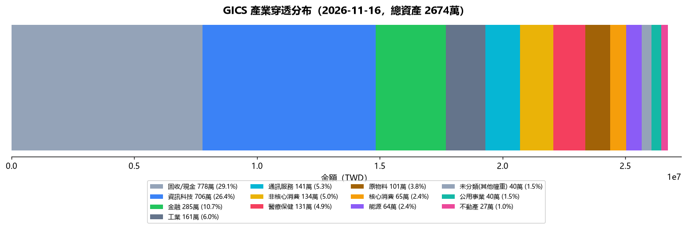

| 項目 | 內容 | 影響 |
|---|---|---|
| 總資產 | 26,545,907 TWD | 流動資產（不記錄不動產）；負債比（含不動產）51.1%｜金融資產負債比 116.6%（負債÷金融資產） |
| 總負債 | 30,955,248 TWD | 總負債合計（含房貸、保單借貸、質押） |
| 本月領息 | 121,382 TWD | 保單 11,657 + ETF 9,630 + 基金 100,095 |
| 被動月收 | 145,382 TWD | 實收：配息 121,382 + 房租 24,000｜預期：房租 80,100 + 配息保守 100,000 |
📌 口徑速記：月支出 159,210（v4 定版）｜配息 121,382（實收=常態）/ 100,000（保守）｜被動保守 180,100（配息 100,000 + 房租 80,100）
⚠️ 配息為截至今日實收，月底前依配息接力時程陸續補齊（撥回入帳後覆蓋率更高）
🟡 注意｜HOLD：不需操作，但風險需持續監控
只看四件事：今天賺賠、為什麼、風險在哪、要不要動。
| 帳面變動 | -192,222 （-0.72%）｜總資產 26,545,907 |
|---|---|
| 分項貢獻 | 台股／證券 -126,060｜基金 -66,991｜保單 -2,411｜現金 +3,240 |
| 估值日 | 台股 2026-11-16 收盤｜美股／費半 前一交易日 2026-11-15（T+1 反映於基金與保單淨值） |
基金淨值有 T+1 時差：今日顯示的美股部位漲跌，實際是前一交易日的價格。不同交易日的數字不得當成同一天的避險效果。
防守沒有生效。台股與海外部位同向下跌，代表目前配置在這次回檔中沒有提供緩衝。
對照：台股加權 41,040.08 (-6.03%)｜費半 10,146.32 (-3.43%)（前一交易日）
A｜配置＝互斥、分母總資產、總和 100%（下表各桶互不重複）；B｜風險＝多維度重疊、不可相加（GICS 產業、個股重複、幣別）。
| 今日最大拖累 | 台股／證券 -126,060 |
|---|---|
| 美股超配 | 36.3%（目標 30%／硬上限 40%）＝目前最大單一風險 |
| 科技（雙口徑） | 14.3%（桶口徑：美股科技桶，上限 15%） ／ 26.0%（GICS 產業穿透：含台股半導體與基金間接持股） 兩者衡量不同維度且重疊，不可相加；GICS 完整度 98.2%、資料日 2026-11-16 |
| 連動與歷史實測 | 基金×保單 +0.09｜台股／證券×基金 +0.10（30 日，n=30）｜過去 9 個台股下跌日中，各桶平均變動：台股／證券 -1.77%、基金 -0.08%、保單 -0.05% 相關性只描述同向、非因果；歷史不保證未來 |
| 重複持股（跨基金） | NVIDIA 549,424（5 檔）｜APPLE 489,127（5 檔）｜MICROSOFT 390,759（5 檔）；前三檔合計 1,429,310＝5.38% 總資產（僅前十大內，實際曝險更高） |
| 持股穿透完整度 | 已穿透 81.6%／部分穿透 6.8%／未穿透 11.6% 未穿透不等於低風險；重複持股僅就已知商品合併 |
| 高股息不是防禦 | 防守型配息 17.4% 為台股高股息 ETF，實測週跌幅：00878 -1.58%（自 2026-11-10）｜0056 -3.25%（自 2026-11-10）（與台股同向，不列為防禦資產） |
| 債券與現金 | 債券 25.1%／現金 4.5%；防禦效果以壓力測試驗證（下表），不看比例本身 |
| 槓桿 | 質押維持率 199.1%（借款 5,900,000／池 11,748,006）｜距內部停止線 189% 需跌 5.23%｜距銀行通知 160% 需跌 19.65% |
| 資產分類（重新歸類） | 代表標的 | 金額 | 占比 | 防禦判定 |
|---|---|---|---|---|
| 台股成長型 | 0050／006208／主動台股 | 3,380,837 | 12.7% | 成長型，非防禦 |
| 股票收益型 | 00878／0056／00919 等高股息 | 4,620,355 | 17.4% | 不列防禦（與台股同向） |
| 海外股票型 | 美股 ETF／美股基金 | 9,635,839 | 36.3% | 成長型，非防禦 |
| 固定收益型 | 債券基金／債券 ETF | 6,668,820 | 25.1% | 需以股債同跌情境驗證 |
| 流動性防禦型 | 現金／存款 | 2,094,919 | 4.5% | 可防禦（對比 70 萬底線） |
| 分散風險型 | 黃金 | 145,136 | 0.5% | 衛星，避險強度以 0 計 |
配息率不等於報酬；債券可能因利率上升而下跌；未完成穿透的基金不得假設為低風險。
| 下跌壓力測試 | 資產損失 | 總資產 | 淨值（含房產） | 質押維持率 | 現金 |
|---|---|---|---|---|---|
| 股市 -10% | -1,763,703 | 24,782,204 | 28,036,241 | 179.2% | 2,094,919 ✅ ≥底線 |
| 股市 -20% | -3,527,406 | 23,018,501 | 26,272,538 | 159.3% ⚠️ 已觸及通知線 | 2,094,919 ✅ ≥底線 |
| 股市 -30% | -5,291,109 | 21,254,798 | 24,508,835 | 139.4% ⚠️ 已觸及追繳線 | 2,094,919 ✅ ≥底線 |
| 股債同跌（股 20%／債 5%） | -3,860,847 | 22,685,060 | 25,939,097 | —（池內股債比重未取得） | 2,094,919 ✅ ≥底線 |
| 流動性壓力（股 20%＋維持率惡化） | -3,527,406 | 23,018,501 | 26,272,538 | 159.3%（回內部停止線需還 918,845） ⚠️ 已觸及通知線 | 2,094,919 ✅ ≥底線 |
假設情境，不是預測。股票類 17,637,031（台股＋美股＋高股息，高股息不當防禦）、債券 6,668,820、現金 2,094,919； 股票全額受衝擊、債券與現金不動、借款不變、不計配息再投入；質押池以「與股市同幅」為最保守假設。
| 今日行動 | 注意｜維持 HOLD：不因單日上漲而加碼，也不因短期下跌而恐慌減碼；上列風險持續監控。 |
|---|---|
| 需要注意 |
|
| 調整觸發條件 |
|
G1／G2／G3 HOLD 未解除；本卡不產生交易授權、不自動加減碼、不解除凍結。壓力測試只供理解風險。
次要（績效，不作判斷用）：今日 帳面 -0.72% vs 台股 -6.03%（+5.31pp）｜本週 -0.02% vs 台股 -3.91%（+3.90pp）｜匯兌 -11,103（美元資產 18,284,861 × 台幣 -0.06%）
| 本月累積報酬率 | -1.37% 🟡 黃燈｜檢查損失來源 |
|---|---|
| 本月帳面損益 | -341,299 TWD （含配息與費用；與報酬率不同源） |
| 距下一級警戒 | 再跌 0.63pp 觸 🟠 全面風險審查 |
| 壓力情境（資產價格同幅下跌） | -5%：總資產 25,323,358（-4.61%）、質押 LTV 52.86%（維持率 189.2%）｜-10%：總資產 24,100,808（-9.21%）、質押 LTV 55.80%（維持率 179.2%）、回 53% 需還 296,201 |
| 當日投資風險裁示 | 觀察｜暫緩加碼，追蹤損失來源 |
口徑：TWR（時間加權、含配息與匯率）｜資料 as-of 2026-11-16（16 個估值日）。 警戒門檻：月累積 -1% 黃燈／-2% 橘燈／-3% 紅燈（相對口徑，不受資產規模影響）。 15 日滾動損益只作歷史風險校準，不代表月累積損益。影子模式（2026-11-05～2027-02-05）：只顯示燈號，不觸發交易、不改 G1/G2/G3。
| 戰略類別 | 金額 TWD | 佔比 | 目標 | 缺口 |
|---|---|---|---|---|
| TW 台股市值型 含證券、平台基金與保單穿透部位，非證券帳戶市值；不同資產類別可能涉及穿透歸類 | 3,380,837 TWD | 12.7% | 10% | +2.7pp |
| 🇺🇸 美股市值型 | 9,635,839 TWD | 36.3% | 30% | +6.3pp |
| └ 科技股 | 3,791,882 TWD | 14.3% | 15% | -0.7pp |
| └ 非科技 | 5,843,957 TWD | 22.0% | ||
| 🛡️ 防守型配息 | 4,620,355 TWD | 17.4% | 30% | -12.6pp |
| 💵 債券 | 6,668,820 TWD | 25.1% | 25% | +0.1pp |
| 💵 安全現金（桶位＝餘數法） | 1,194,919 TWD | 4.5% | 5% | -0.5pp |
配置比例依總資產計算（分母＝總資產，已含指定款、在途及衛星資產）；各桶金額依既定分類統計。
防禦維度另以「總資產－指定用途款」為分母（25,645,907 TWD，指定用途款 900,000），與本表配置比例不可互換。管理費~1.5%，偏高於配息收益率。
【台股/大盤】
加權指數：41,040.08 (-6.03%)
台積電：2,215.00 (-5.74%)
【美股/外資】
美股：道瓊 52,347.55 (+0.10%) / 納指 25,136.27 (-0.91%) / S&P 7,561.67 (-0.40%)
費半：10,146.32 (-3.43%)
【CPI/利率】
美國CPI：未取得（FRED 無回應）
【賣出訊號】
• 台股加權大跌 -6.03%
• 台積電大跌 -5.74%
• 費半跌 -3.43%
【買進訊號】
無
【最新市場消息】
• 台股重挫2635點想抄底？元大投信：過去20年99%股票輸0050 (來源：tw.stock.yahoo.com)
• 台股重挫及外資賣超壓力，新台幣兌美元週一貶值4.8分，收32.886元 (來源：tw.stock.yahoo.com)
• 黃仁勳辭職引爆輝達重挫 美股大盤逆勢抗跌顯分散效益 (來源：tw.stock.yahoo.com)
【持倉關聯分析】
台股持倉市值型成長 3,380,837 TWD，今日大盤下跌 -6.03%，短線承壓。
【情報重點（含持倉關聯）】
🔴 台股加權 今日 41,040.08 (-6.03%)，市場情緒看跌。（影響: ）
🔴 台積電 今日 2,215.00 (-5.74%)，市場情緒看跌。（影響: 0050）
🟡 費半 今日 10,146.32 (-3.43%)，市場情緒看跌。（影響: ）
保單現值 9,361,937 TWD（安聯 A+B 7,470,379 + 第一金 M&G入息基金A(美元避險月配)F 100%（10/08 轉換已生效） 1,891,558），本月配息合計 11,657 TWD。落實利潤再投資 SOP，於 T+4 最晚轉換申請日才執行 relay 轉換。
證券總市值 2,607,510 TWD（14檔）。本月已收配息：9,630 TWD。前三大：00878 19.3%、006208 17.5%、009816 9.1%。0056 凍結質押中，短期無法加碼。
| ETF | 狀態 | 除息日 | 配息 | 發放日 |
|---|---|---|---|---|
| 0050 | ✅ 已除息 | 7/21(二) | 0.6元 | 8/10 已領 |
| 006208 | ✅ 已除息 | 7/16(四) | 4.75元 | 8/10 已領 |
| 0056 | ✅ 已除息 | 7/21(二) | 1.35元 | 8/10 已領 |
| 00984A | ✅ 已除息 | 7/16(四) | 0.415元 | 8/10 已領 |
| 00888 | ✅ 已除息 | 7/27(一) | 1.753元 | 8/20 已領 3,496（除息時 2,000 股） |
| 00983D(8月) | ✅ 已除息 | 8/17(一) | 0.06元 | 9/10 已入帳 1,190 |
| 00878 | ✅ 已除息 | 8/18(二) | 1.01元 | 9/11 已入帳 15,150 |
| 00713 | ✅ 已除息 | 9/21(一) | 1.25元 | 10/13 已入帳 2,490（預估 2,500，扣匯費 10） |
| 00981A | ✅ 已除息 | 9/16(三) | 0.63元 | 10/13 已入帳 2,510（公告 0.63/股 預估 5,040；實收約 0.315/股＝半數 → 配息率或股數待確認） |
| 00983D(9月) | ✅ 已除息 | 9/16(三) | 0.061元 | 10/14 已入帳 1,210（預估 1,220，扣匯費 10） |
| 00919 | ✅ 已除息 | 9/16(三) | 1.1元 | 10/15 已入帳 6,590（預估 6,600，扣匯費 10） |
| 00918 | ✅ 已除息 | 9/18(五) | 1.75元 | 10/15 已入帳 1,740（預估 1,750，扣匯費 10） |
| 0056(10月) | ✅ 已除息 | 10/22(四) | 1.72元 | 11/11 待入帳 |
| 00984A(10月) | ✅ 已除息 | 10/19(一) | 0.473元 | 11/13 待入帳 |
| 00888(10月) | ✅ 已除息 | 10/27(二) | 1.5元 | 11/20 待入帳 |
| 00927(10月) | ✅ 已除息 | 10/19(一) | 2.0元 | 11/13 待入帳 |
| 00983D(10月) | ✅ 已除息 | 10/19(一) | 0.061元 | 11/12 待入帳 |
| 00983D | 🔜 下一梯次 | 11/17(二) | 待公告元 | 12/10 前後 |
| 00984A | 🔜 下一梯次 | 2027/1 | 待公告元 | |
| 0056 | 🔜 下一梯次 | 2027/1 | 待公告元 | |
| 00888 | 🔜 下一梯次 | 2027/1 | 待公告元 | |
| 00878 | 🔜 下一梯次 | 11/17(二) | 待公告元 | 12/11(五) |
| 006208 | 🔜 下一梯次 | 11月中（待公告） | 待公告元 | |
| 0050 | 🔜 下一梯次 | 2027/1 | 待公告元 | |
| 00927 | 🔜 下一梯次 | 2027/1 | 待公告元 | |
| 00919 | 🔜 下一梯次 | 12月（待公告） | 待公告元 | |
| 00918 | 🔜 下一梯次 | 12月（待公告） | 待公告元 | |
| 00713 | 🔜 下一梯次 | 12月（待公告） | 待公告元 | |
| 00981A | 🔜 下一梯次 | 12月（待公告） | 待公告元 |
房租月收 80,100 TWD〔常態應收；當月已收 24,000、待收 56,100〕，覆蓋月支出 50%。當月應收 80,100 = 大義街1樓24,000+大義街23樓21,000+洲際W33,000+管理費2,100｜已收 大義街1樓24,000（24,000）｜待收 56,100可動用流動資金 1,194,919 TWD（Moneybook 真值 2,094,919 − 指定清償款 900,000），餘裕充足 ✅
指定用途款 590萬＝✅ 元大證金 96萬＋✅ 安聯-已轉 200萬＋✅ 安聯-10/1 101萬＋✅ 第一金-10/1 101萬＋⏳ W房貸預繳 20萬＋⏳ 國泰保留 70萬＋⏳ 未用罄 2萬（轉帳中者待 MB／截圖確認才入帳）
基金總市值 12,481,541 TWD ＝ 鉅亨網 733,535 ＋ 國泰基金 11,748,006（富達 5,704,635 + 聯博 979,577 + B11 5,063,794）。本月已收配息：100,095 TWD。一般申購-A05144 元大台灣卓越50ETF(0050)連結基金-台幣B配息 46,387 / 一般申購-A17030 台中銀台灣優息基金-B配息台幣 43,243 / 一般申購-A36004 安聯台灣科技基金 2,777 / 一般申購-A36135 安聯AI收益成長多重資產基金-B(月配)美元 6,131 / 一般申購-A37170 國泰台灣高股息基金B 7,040 / 一般申購-A47219 台新美日台半導體基金A-日圓 106,758 / 一般申購-A49015 路博邁台灣5G股票基金T月配級別(台幣) 76,362 / 一般申購-B03629 聯博-全球多元收益基金AD月配美元 2,932 / 一般申購-B03870 聯博-美國成長基金AP總報酬月配美元 2,969 / 一般申購-B08291 摩根基金-JPM多重收益美元對沖A穩定月配 2,949 / 一般申購-B09006 貝萊德世界黃金A2美元 3,066 / 一般申購-B09261 貝萊德全球股票收益A6美元穩定配息 3,103 / 一般申購-B09460 貝萊德世界科技A10美元總報酬穩定配息 3,655 / 一般申購-B09461 貝萊德世界能源A10美元總報酬穩定配息 5,541 / 一般申購-B09462 貝萊德世界健康科學A10美元總報酬穩定配息 5,283 / 一般申購-B09463 貝萊德世界黃金A10美元總報酬穩定配息 2,457 / 一般申購-B09557 貝萊德全球智慧數據股票入息A11美元強化穩定配息 3,024 / 一般申購-B14445 富達全球動能多元基金A股C月配美元 2,865 / 一般申購-B20186 安聯收益成長AMg7月收總收益美元 3,363 / 一般申購-B31138 M&G入息基金A(美元避險月配)F 2,997 / 自由Pay-A05143 元大台灣卓越50ETF(0050)連結基金-台幣A不配息 107,446 / 自由Pay-A09012 統一泰順基金 80,973 / 自由Pay-A49038 路博邁台灣5G股票基金T累積級別(台幣) 212,214 / 國泰直購-富達全球動能多元B股C月配息美元 5,704,635 / 國泰直購-貝萊德智慧數據收益成長B11-美元-強化穩定月配息 5,063,794 / 國泰直購-聯博全球多元收益AD美元月配 979,577 / 一般申購_平台小計 332,902 / 平台小計 733,535 / 自由Pay_小計 400,633 / 鉅亨平台合計 733,535 / 國泰直購_小計 11,748,006
本月配息合計：11,657 TWD
| 站別 | 基金 | 配息時間 | T+4截止 | 狀態 |
|---|---|---|---|---|
| 第一站（月初） | 摩根JPM多重收益（安聯A+B；第一金 FJXX） | 月初（10/7、11/9、12/7、1/7） | 10/1（10月） | ✅ 正常運作 |
| 第二站（月中） | 安聯收益成長 + M&G入息 | 月中（安聯 10/14、M&G 10/16） | 10/8（安聯）、10/12（M&G） | ✅ 正常運作 |
| 第三站（月底） | 安聯AI收益 + 貝萊德世界科技A10 + PIMCO收益增長 | 月底（AI 10/28、PIMCO 10/28、A10/聯博 10/29） | 10/22（AI）、10/22（PIMCO）、10/23（A10） | ✅ 正常運作 |
| 基金 | 11月 | 12月 |
|---|---|---|
| 摩根JPM | 11/09→11/03 | 12/07→12/01 |
| 安聯收益成長 | 11/13→11/09 | 12/14→12/08 |
| M&G入息 | 11/20→11/16 | 12/18→12/14 |
| PIMCO | 11/24→11/18 | 12/29→12/23 |
| 安聯AI收益 | 11/25→11/19 | 12/29→12/23 |
| 聯博 | 11/27→11/23 | 12/30→12/24 |
| 貝萊德A10 | 11/27→11/23 | 12/30→12/24 |
除息日→T+4轉換截止。T+4 = 除息日前4工作日。
轉出 USDEQ3490 安聯收益成長AM穩定月收(美元)（現值 2,663,061 TWD，轉出 1,000,000 TWD／37.6%），分 3 批內部轉換，不新增資金、不動保單現值總額。
| 批次 | 申請日 | 金額 TWD | 轉入 | T+4 入帳 | 搶息 |
|---|---|---|---|---|---|
| 批 1 | 2026-11-20 | 1,000,000 | 摩根 USDEQ5440 | 2026-11-26 | ✅ 12/08 摩根除息（11/26 生效後已持有） |
| 預期位移 | 金額 TWD | 桶位變化 |
|---|
搶息規則：送件日＝除息基準日前 4 個營業日（入帳當日即算參與），提前 1 營業日較安全。系統不下單，需於安聯 App 送件後回報截圖。
| 指標 | 數值 TWD | 備註 |
|---|---|---|
| 現值 | 7,470,379 | 最新 market value |
| 本月配息 | 11,657 | 當月配息 |
| 指標 | 數值 TWD | 備註 |
|---|---|---|
| 現值 | 1,891,558 | 配息前 |
| 本月配息 | 0 | 上月底配息 |
| 銀行 | 卡片 | 繳款日 | 近期應付 TWD | 狀態 |
|---|---|---|---|---|
| 玉山銀行 | Unicard / UNI | — | 1,372 | ✅ 無欠款（溢繳） |
| 台新銀行 | Richart | — | 2,990 | 🔄 待扣繳 |
| 永豐銀行 | SPORT | — | 18,485 | 🔄 待扣繳 |
| 台北富邦 | momo / J | — | 10,136 | 🔄 待扣繳 |
| 國泰世華 | CUBE | — | 18,293 | 🔄 待扣繳 |
| 銀行 | 貸款名稱 | 扣款日 | 金額 TWD | 狀態 |
|---|---|---|---|---|
| 永豐銀行 | 永豐房貸 (YY) | — | 5,712,527 | — |
| 永豐銀行 | 永豐房貸 (YYDU) | — | 4,540,812 | — |
| 永豐銀行 | 永豐房貸 (XZ) | — | 2,752,005 | — |
| 國泰世華 | 國泰房貸（大義街轉貸 2.6%） | 20日 | 12,000,000 | 9/20起月付 26,000 |
| 國泰世華 | 基金質押（質押基金池 1,174.8 萬） | 2.65% | 5,900,000 | 9/29 撥款入帳 |
📋 執行中決策追蹤
| 日期 | 決策 | 狀態 | 決策卡 |
|---|---|---|---|
| 2026-11-10 | 薪資常態：已定 48,016 暫定（11/06 升等實入），12/05 完整月複核、2027-01 轉正式 | 待處理 | — |
| 2026-11-12 | 保單轉換：安聯A 收益成長 1,000,000 → 摩根 USDEQ5440（單批，月初配息第一站） | 已確認 | — |
🔧 技術債（工程／治理類 · 另冊 tech_debt.json）72 筆｜P0 1／P1 8／P2 35／未分級 25｜最舊 2026-09-16（61 天）｜⚠️ 逾 45 天未結 2 筆
| 日期 | 項目 | 金額 TWD | 狀態 |
|---|---|---|---|
| 2026-11-16 | 🎯 00878／00983D 除息前最後買進日 | — | 📋 除息行事曆 |
| 2026-11-16 | 🔴 M&G入息 11/20 除息 T+4 截止（今最後送件） | 🔴 重要 | |
| 2026-11-17 | 💰 00878／00983D 除息日 | — | 📋 除息行事曆 |
| 2026-11-18 | 🔴 PIMCO 11/24 除息 T+4 截止（今最後送件） | ⛔ 已取消（2026-11-14 改案：三批作廢，改單批 11/20 轉摩根） | |
| 2026-11-19 | ⚠️ 006208 停止過戶（1 拆 8 分割作業期） | — | 📋 分割作業 |
| 2026-11-19 | 🔴 安聯AI收益 11/25 除息 T+4 截止（今最後送件） | ⛔ 已取消（2026-11-14 改案：三批作廢，改單批 11/20 轉摩根） | |
| 2026-11-19 | 🧭 US30Y 解凍邏輯重審（替代路線 A/B/C 取捨）：紅線連續 52 日已 stage 3，60 天進第 4 階段前必須定案（CIO 11/11 建議 1） | 📌 待追蹤 | |
| 2026-11-20 | 💰 國泰房貸繳款（大義街轉貸寬限期，金額見月固定支出） | 26,000 | 📋 每月20日 |
| 2026-11-20 | 🔄 M&G入息 11/20 除息日核對 | 📋 核對 | |
| 2026-11-21 | ⛰️ 上山找媽媽（探望） | 📋 已排定 | |
| 2026-11-23 | 🔴 聯博／貝萊德A10 11/27 除息 T+4 截止（今最後送件） | ⛔ 已取消（2026-11-14 改案：三批作廢，改單批 11/20 轉摩根） | |
| 2026-11-17 | 🔄 保單轉換 批1 送件：安聯A 收益成長 400,000 → PIMCO（搶 11/24 除息） | ⛔ 已取消（2026-11-14 改為 11/20 轉摩根 USDEQ5440） | |
| 2026-11-16 | 📌 保單轉換 前置確認：安聯年度免費轉換次數／費用（條款） | ⏳ 待確認 | |
| 2026-11-16 | 📌 保單轉換前置：確認安聯 App 可送件（11/20）＋年度免費轉換次數是否足夠 | ⏳ 待確認 | |
| 2026-11-20 | 🔄 保單轉換送件：安聯A 收益成長 1,000,000 → 摩根 USDEQ5440（月初配息第一站） | 1000000 | ⏳ 待執行（T+4 11/26） |
🔁 配息接力時間表：💰 = 配息基準日（基準日+12天左右入帳）、🔴 = T+4 轉換截止（除息前4工作日）。三站依配息時間循環領息：第一站（10/7） → 第二站（10/14） → 第三站（10/28）。
📅 緊急應變資料：2026-11-16 13:05（台股應變分析；未觸發門檻則沿用此份；美股時段 21:30 每交易日固定更新）
【一、市場概況】| 產業 | 金額 | 佔比 | 狀態 |
|---|---|---|---|
| 高科技/半導體 | 6,896,039 | 26.0 | 🟢 未達紅線 30%（當前 26.0%） |
| 金融/電信 | 4,223,167 | 15.9 | |
| 醫療/公用事業/不動產 | 1,968,192 | 7.4 | |
| 民生/工業/原物料 | 5,222,890 | 19.7 | |
| 固收與現金 | 7,761,887 | 29.2 | |
| 其他/未分類 | 473,732 | 1.8 | |
| 實物避險-黃金 | 145,402 | 0.5 | ⛔ 已結案（2026-10-30）：既有部位保留不賣；不再有後續建倉／分批指示 |
| 實物避險-石油 | 0 | 🔴 Locked（radar_state 標記，機構撤離中） | |
| 輪動閥門 | 0 |
| 產業 | 金額 | 佔比 |
|---|---|---|
| 固收/現金 | 7,761,887 | 29.2% |
| 資訊科技 | 6,896,039 | 26.0% |
| 金融 | 2,821,349 | 10.6% |
| 工業 | 1,600,703 | 6.0% |
| 通訊服務 | 1,401,818 | 5.3% |
| 非核心消費 | 1,337,172 | 5.0% |
| 醫療保健 | 1,300,729 | 4.9% |
| 原物料 | 1,004,966 | 3.8% |
| 核心消費 | 642,560 | 2.4% |
| 能源 | 637,489 | 2.4% |
| 未分類(其他權重) | 473,732 | 1.8% |
| 公用事業 | 398,478 | 1.5% |
| 不動產 | 268,985 | 1.0% |

| 產業 | 買什麼 | 金額 | 節奏 |
|---|---|---|---|
| 核心消費 | 0050(含核心消費成分:統一/大成等) | 532,000 | 分 10 批（單筆 ≤5 萬） |
| 現金保留 | 台幣活存/MMF | 0 | 守住現金底線 700,000.0；防守合併 65.8%（防守承接凍結（2026-08-21 使用者：基金也有配息應合併計算）） |
US30Y 5.48%（即時讀值｜讀值日 2026-11-13） 🟡｜VIX 16｜美元信用壓力 71.5🔴｜科技 57.5｜確定收益 57.4｜地緣 43.0｜緊急應變分 65
影響：
避險現況：黃金：161,596 / 目標 105萬（已建保單32萬，剩餘PI後）｜石油：4,958 / 目標 26萬（缺口大）｜防守：合併口徑 65.8%（≥60% 已足、承接凍結）｜現金：可動用 1,194,919（帳戶層真值 2,094,919）守底線 70萬
因應三步驟：
評估已核准寫入日報 8/9 決策核心區塊（2026-08-21）
🛡️ 防禦維度 49.1%（債券＋現金/貨幣＋低波高股息防禦＋配息型基金權益＋保單內防守型高股息權益（2026-11-03 裁決 S1）＋避險衛星（2026-10-30 結案，以 0 計入）｜抗跌/LTV保護）＝ 債券 6,668,820 + 現金 1,194,919 + 低波 1,089,462 + 配息型基金權益 3,367,500 + 避險衛星（2026-10-30 結案，不計入；黃金部位保留於原五桶）
💵 收入引擎 69.5%（全配息資產+不動產租金｜現金流覆蓋）＝ 全配息資產 + 房租 80,100/月
核心：配息≠防守，兩維度分離計算、獨立風控；避險衛星以目標值計入防禦維度（現況未建倉，目標金額由避險衛星欄位動態讀取）；配息型基金權益＝B11 依官方成分 62.58/32.65/4.77（權益部位＋內部現金，內部現金不進現金桶）；現金/貨幣停泊＝可動用台幣活存，帳戶層真值與指定用途款一律由 snapshot 數字欄位動態生成（2026-09-30 P0-1 移除手寫金額）｜【2026-10-30 裁決】避險衛星整體機制結案 → 原以『目標值 1,310,000』計入之口徑作廢，改以 0 計入；理由：黃金保單 367,192 已在五桶內計入，再加會重複計算，且已作廢的配置目標不應影響配置建議。實際部位（黃金 367,192／石油 4,958）保留不賣、仍計入總資產與穿透。分母維持既定口徑＝total_assets − 指定用途款 900,000＝26,080,153（9/29 裁決），故佔比 47.7%、較原 52.7% 降 5.0pp；若以總資產 26,980,153 為分母則為 46.11%（-6.6pp），非本系統口徑。
🎯 四大市場情境（當前：區間震盪）：多頭 防禦≥40/收入≥60/LTV≤55 ｜ 震盪 防禦≥50/收入≥65/LTV≤52 ｜ 股債雙殺 防禦≥55/收入≥70/LTV≤50 ｜ 熊市 防禦≥60/收入≥70/LTV≤48
📐 現況對照（震盪標準 防禦≥50／收入≥65）：防禦 49.1% ⚠️ 未達（抗跌／LTV 保護；配息承接判準＝合併口徑 65.8% ≥60% ✅ 已足，兩者不同問題、勿混讀） ｜ 收入 69.5% ✅｜LTV 見第八章風險紅線（動態）
🧑💻 CIO 觀點
①配置：台股12.7%不動，不追跌；美股36.3%內科技26.0%偏高，為主要調整點。資金流向科技-105、市值型-223、高股息-279、台積電-63，惟食品+77、債券+13、塑化+12、營建+9，防禦與實體資金進駐，故減科技、加核心消費，債券25.1%與現金4.5%續守。 ②最大風險：科技集中疊加台股-6.03%、台積電-5.74%同步破位，底層為AI評價收縮與流動性緊縮共振；美債10年🟢、Fed🟢僅部分對沖，賣訊3/買訊0顯示下行動能未止。 ③動作：本週分批減資訊科技，轉核心消費；避開科技與高股息；台股、債券、現金不動，待訊號轉正再議。| 資產分類 | 現況% | 目標% | 偏離pp | 動作 | 精算金額 | 階梯 | 觸發條件 |
|---|---|---|---|---|---|---|---|
| 台股市值型成長 | 12.7% | 10% | +2.7 | 觀察(凍結期) | 0 | 戰術觀察 | 記錄偏移，等待資金流入再處理，不主動賣出調整｜慢慢買暫緩（PI 後恢復） |
| 美股市值型成長 | 36.3% | 30% | +6.3 | 觀察(凍結期) | 0 | 中等再平衡 | 計算調整金額，納入週報指示卡｜逢彈減碼 ≤20萬/次（8/19 核准） |
| 防守型配息 | 17.4% | 30% | -12.6 | 承接凍結 | 0 | 大規模再平衡 | 優先等級拉高，下週必須處理｜合併 65.8% ≥60% 凍結 |
| 債券 | 25.1% | 25% | +0.1 | 凍結 | 0 | 觀察 | 僅寫入警示日誌，不產生交易建議｜基金經理人調整（PIMCO/M&G/00983D），不另建債梯 |
| 現金/安全網 | 4.5% | 5% | -0.5 | 觀察(凍結期) | 0 | 觀察 | 僅寫入警示日誌，不產生交易建議｜底線制：超額 494,919.0 待部署（MMF 停泊）；另指定清償款 900,000 不列可部署 |
| 產業/衛星 | 動作 | 標的 |
|---|---|---|
| 資訊科技 | ⏸ 避開（資金流出） | 0050/006208(含台積電50%)、00924(純科技) |
| 核心消費 | ✅ 乾粉優先吸納 | 0050(含核心消費成分:統一/大成等) |
| 醫療保健 | 🟡 觀察（資金中性） | 保單健康科學A2（8/24 轉換 50萬涵蓋） |
| 黃金衛星 | 🟢 順勢（COT 淨多單週增）（COT 淨多 179,548） | 00635U（PI 後分批 40/30/20，單次≤20萬） |